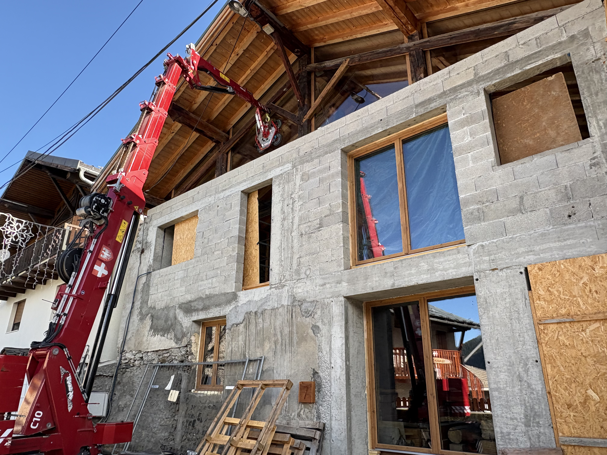
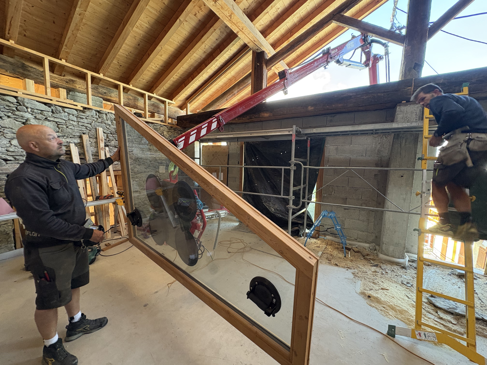

Diagnostic : Entrait dégradé
L'entrait d'origine présentait des signes avancés de pourrissement.

Remplacement structurel
Substitution de la pièce défectueuse par une nouvelle poutre en bois massif.

Pose des menuiseries
Intégration des nouvelles menuiseries isolantes.

Moyens de levage
Utilisation d'une grue mobile équipée d'un palonnier à ventouses.